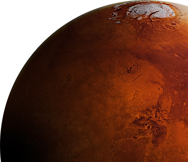

Asal-Usul Nama

Dalam bahasa Inggris, planet ini dinamai Dewa Perang Romawi, sebuah asosiasi yang dibuat karena warna merahnya, yang
menunjukkan darah. Bentuk kata sifat mars Latin adalah Martius, yang menyediakan kata bahasa Inggris Mars,digunakan
sebagai kata sifat atau untuk penduduk putatif Mars, dan Martial,digunakan sebagai kata sifat yang sesuai dengan
Terrestrial for Earth. Dalam bahasa Yunani, planet ini dikenal sebagai Ἄρης Arēs,dengan batang infleksi Ἄρε- Are-.
Dari sini muncul istilah teknis seperti areologi, serta kata sifat Arean dan nama bintang Antares.
Mars juga merupakan dasar dari nama bulan Maret (dari Latin Martius mēnsis 'bulan Mars'), serta Selasa (Latin meninggal
Martis 'hari Mars'), di mana dewa Anglo-Saxon tua Tíw diidentifikasi dengan dewa Romawi Mars oleh Interpretatio
germanica.
Karena pengaruh global bahasa Eropa dalam astronomi,kata seperti Mars atau Marte untuk planet ini umum di seluruh dunia,
meskipun dapat digunakan bersama kata-kata asli yang lebih tua. Sejumlah bahasa lain telah memberikan kata-kata dengan
penggunaan internasional. Misalnya:
-
Bahasa Arab مريخ mirrīkh – yang berkonotasi api – digunakan sebagai (atau a) nama untuk planet ini dalam bahasa Persia,
Urdu, Melayu dan Swahili, antara lain
-
Cina 火星[Mandarin Huǒxīng]'bintang api' (dalam bahasa Cina lima planet klasik diidentifikasi dengan lima elemen)digunakan
dalam bahasa Korea, Jepang dan Vietnam.
-
India menggunakan istilah Sansekerta Mangal yang berasal dari dewi Hindu Mangala.
-
Nama panggilan lama untuk Mars adalah "Planet Merah". Itu juga nama planet dalam bahasa Ibrani, מאדים ma'adim,yang
berasal dari אדום adom, yangberarti 'merah'.
-
Bentuk Latin kuno Māvors (/ˈmeɪvɔːrz/)terlihat, tetapi hanya sangat jarang, dalam bahasa Inggris, meskipun kata sifat
Mavortial dan Mavortian berarti 'bela diri' dalam militer daripada pengertian planet.
Suhu dan Atmosfir

Atmosfer Mars adalah lapisan gas yang mengelilingi Mars. Hal ini terutama terdiri dari karbon dioksida (95%), nitrogen
molekuler (2,8%) dan argon (2%). Atmosfer Mars jauh lebih tipis dari Bumi. Tekanan permukaan rata-rata hanya sekitar 610 pascal
(0,088 psi) yang kurang dari 1% dari nilai bumi. Atmosfer Mars yang saat ini tipis melarang keberadaan air cair di
permukaan Mars, tetapi banyak penelitian menunjukkan bahwa atmosfer Mars jauh lebih tebal di masa lalu. Kepadatan
atmosfer tertinggi di Mars sama dengan kepadatan yang ditemukan 35 km (22 mil) di atas permukaan bumi dan ~ 0,020 kg /
m3. Atmosfer Mars telah kehilangan massa ke ruang angkasa sejak planet ini terbentuk, dan kebocoran gas masih berlanjut
hingga hari ini.
Atmosfer Mars lebih dingin dari Bumi. Karena jarak yang lebih besar dari Matahari, Mars menerima lebih sedikit energi
matahari dan memiliki suhu efektifyang lebih rendah, yaitu sekitar 210 K (-63 ° C; -82 ° F). Suhu emisi permukaan
rata-rata Mars hanya 215 K (-58 ° C; -73 ° F), yang sebanding dengan Antartika pedalaman. Efek rumah kaca yang lebih
lemah di atmosfer Mars (5 ° C (9,0 ° F), versus 33 ° C (59 ° F) di Bumi) dapat dijelaskan oleh kelimpahan rendah gas
rumah kacalainnya. Kisaran suhu harian di atmosfer yang lebih rendah sangat besar karena inersia termal yang
rendah; Dapat berkisar dari -75 ° C (-103 ° F) hingga mendekati 0 ° C (32 ° F) di dekat permukaan di beberapa daerah.
Suhubagian atas atmosfer Mars juga secara signifikan lebih rendah dari Bumi karena tidak adanya ozon stratosfer dan efek
pendinginan radiasi karbon dioksida pada ketinggian yang lebih tinggi.
Atmosfer Mars adalah atmosfer pengoksidasi. Reaksi fotokimia di atmosfer cenderung mengoksidasi spesies organik dan
mengubahnya menjadi karbon dioksida atau karbon monoksida. Meskipun probe metana yang paling sensitif pada ExoMars Trace
Gas Orbiter yang baru diluncurkan gagal menemukan metana di atmosfer diseluruhMars, beberapa misi sebelumnya dan
teleskop berbasis darat mendeteksi tingkat metana yang tak terduga di atmosfer Mars, yang bahkan mungkin menjadi
biosignature untuk kehidupan di Mars. Namun,interpretasi pengukuran masih sangat kontroversial dan tidak memiliki
konsensus ilmiah.
Berikut ini merupakan komposisi dari atmosfir Planet Mars :
- Karbon Dioksida
- Nitrogen
- Argon
- Uap Air
- Oksigen
- Karbon Monoksida
- Hidrogen
- Gas Mulia (Helium, Neon, Kripton dan Xenon)
Ciri-Ciri
Berikut beberapa ciri umum dari Planet Mars :
- Gravitasi : 3,711 m/s²
- Satelit yang diketahui : Phobos dan Deimos
- Kecepatan rotasi ekuator : 868,22 km/jam
- Periode rotasi sideris : 1,025 957 hari; 24j 37m 22d
- Gravitasi permukaan : 3,69 m/s²; 0,376 g
- Waktu Rotasi : 24,62 Jam
- Waktu Revolusi : 687 Hari

Struktur Planet Mars

Mars telah berdiferensiasi menjadi inti logam padat yang dilapisi oleh bahan yang kurang padat. Model interiornya saat
ini menyiratkan inti yang terutama terdiri dari besi dan nikel dengan sekitar 16-17% sulfur. Inti sulfida besi (II) ini
diperkirakan dua kali lebih kaya unsur yang lebih ringan dari Bumi. Inti dikelilingi oleh mantel silikat yang membentuk
banyak fitur tektonik dan vulkanik di planet ini, tetapi tampaknya tidak aktif. Selain silikon dan oksigen, unsur-unsur
yang paling melimpah di kerak Mars adalah besi, magnesium, aluminium, kalsium,dan kalium.
Mars aktif secara seismik, dengan lebih dari 450 marsquakes dan peristiwa terkait pada tahun 2019. Pada
tahun 2021 dilaporkan bahwa berdasarkan sebelas Marsquakes frekuensi rendah yang terdeteksi oleh InSight. Inti
Mars memang cair dan memiliki radius sekitar 1830±40 km dan suhu sekitar 1900-2000 K. Jari-jari inti Mars lebih dari
setengah jari-jari Mars dan sekitar setengah ukuran inti bumi. Ini agak lebih besar dari model yang diperkirakan,
menunjukkan bahwa inti mengandung sejumlah elemen yang lebih ringan seperti oksigen dan hidrogen di samping paduan
besi-nikel dan sekitar 15% sulfur.
Inti Mars ditimpa oleh mantel berbatu, yang tampaknya tidak memiliki lapisan yang analog dengan mantel
bawah Bumi. Mantel ini tampaknya padat hingga kedalaman sekitar 500 km, di mana zona kecepatan rendah (sebagian
asthenosphere meleleh) dimulai. Di bawah asthenosphere kecepatan gelombang seismik mulai tumbuh lagi dan pada kedalaman
sekitar 1050 km terletak batas zona transisi. Di permukaan Mars terdapat kerak dengan ketebalan rata-rata sekitar
24-72 km.